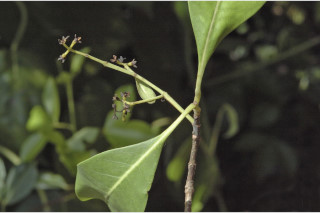
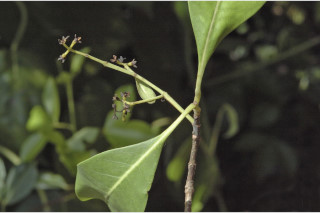

Trees up to 20 m tall.
20 ಮೀ. ಎತ್ತರದವರೆಗಿನ ಮರಗಳು.
Trees up to 20 m tall.
மரங்கள் 20 மீ. உயரம் வரை வளரக்கூடியது.
Bark greyish brown, corky lenticellate; blaze cream with reddish speckles.
ತೊಗಟೆ ಬೂದು ಮಿಶ್ರಿತ ಕಂದು ಬಣ್ಣ ಹೊಂದಿದ್ದು ವಾಯುವಿನಿಮಯ ‘ದಟ್ಟ ಬೆಂಡು’ ರಂಧ್ರಗಳ ಸಮೇತವಿರುತ್ತದೆ;ಕಚ್ಚು ಮಾಡಿದ ಜಾಗ ಕೆಂಪು ಛಾಯೆಯುಳ್ಳ ಮಚ್ಚೆಗಳಿಂದ ಕೂಡಿದ ಕೆನೆ ಬಣ್ಣದಲ್ಲಿರುತ್ತದೆ.
Bark greyish brown, corky lenticellate; blaze cream with reddish speckles.
மரத்தின் பட்டை சாம்பல்-ப்ரவுன் நிறமானது, பெரிய பட்டைத்துளைகள் (லெண்டிசெல்லேட்) உடையது; உள்பட்டை கிரீம் நிறமானது மற்றும் சிவப்பு கலந்தவை.
Young branchlets quadrangular, terete when mature, glabrous, lenticellate.
ಎಳೆಯ ಕಿರುಕೊಂಬೆಗಳು ನಾಲ್ಕುಕೋನಗಳನ್ನು ಹೊಂದಿದ್ದು ಬಲಿತಾಗ ದುಂಡಗಿರುತ್ತವೆ ಮತ್ತು ರೋಮರಹಿತವಾಗಿದ್ದು ವಾಯುವಿನಿಮಯ ಬೆಂಡು ರಂಧ್ರಗಳ ಸಮೇತವಿರುತ್ತವೆ.
Young branchlets quadrangular, terete when mature, glabrous, lenticellate.
சிறிய நுனிக்கிளைகள் குறுக்குவெட்டுத் தோற்றத்தில் நான்கு கோணங்களுடையது, முதிரும் போது குறுக்குவெட்டுத் தோற்றத்தில் வளையமானது, உரோமங்களற்றது, பட்டைத்துளைகள் (லெண்டிசெல்லேட்) உடையது.
Leaves simple, opposite, decussate; petiole 2-3.5 cm long, planoconvex in cross section, glabrous; lamina 7.5-14 x 3.5-5 cm, elliptic to elliptic-oblong or elliptic-obovate, apex acuminate or sometimes acute, base attenuate, margin entire or slightly revolute, chartaceous, glabrous beneath; midrib flat above; secondary nerves 8-14 pairs, slender; tertiary broadly reticulate or obscure.
ಎಲೆಗಳು ಸರಳವಾಗಿದ್ದು ಕತ್ತರಿಯಾಕಾರದ ಅಭಿಮುಖ ಜೋಡನಾ ವ್ಯವಸ್ಥೆಯಲ್ಲಿ -ರುತ್ತವೆ; ಎಲೆತೊಟ್ಟುಗಳು 2 ರಿಂದ 3.5 ಸೆಂ.ಮೀ.ಉದ್ದವಿದ್ದು ,ಅಡ್ಡ ಸೀಳಿದಾಗ ಸಪಾಟ ಪೀನ ಮಧ್ಯದ ಆಕಾರದಲ್ಲಿರುತ್ತವೆ, ಮತ್ತು ರೋಮರಹಿತವಾಗಿರುತ್ತದೆ; ಪತ್ರಗಳು7. 5-14X 3.5-5 ಸೆಂ.ಮೀ. ಗಾತ್ರ, ಅಂಡವೃತ್ತ, ಅಂಡವೃತ್ತ-ಚತುರಸ್ರ ಅಥವಾ ಅಂಡವೃತ್ತ-ಬುಗುರಿಯವರೆಗಿನ ಆಕಾರ, ಕ್ರಮೇಣ ಚೂಪಾಗುವ ಅಥವಾ ಕೆಲವು ವೇಳೆ ಚೂಪಾಗಿರುವ ತುದಿ, ಒಳಬಾಗಿದ ಬುಡ, ನಯವಾದ ಅಥವಾ ಸ್ವಲ್ಪಮಟ್ಟಿಗೆ ಹಿಂಸುರುಳಿಯಾದ ಅಂಚು, ಕಾಗದವನ್ನೋಲುವ ಮೇಲ್ಮೈ ಹೊಂದಿದ್ದು ತಳಭಾಗದಲ್ಲಿ ರೋಮರಹಿತವಾಗಿರುತ್ತವೆ; ಮಧ್ಯನಾಳ ಮೇಲ್ಭಾಗದಲ್ಲಿ ಚಪ್ಪಟೆಯಾಗಿರುತ್ತದೆ; ಎರಡನೇ ದರ್ಜೆಯ ನಾಳಗಳು 8 ರಿಂದ 14 ಜೋಡಿಗಳಿದ್ದು, ತೆಳುವಾಗಿರುತ್ತವೆ;ಮೂರನೇ ದರ್ಜೆಯ ನಾಳಗಳು ವಿಶಾಲ ಜಾಲಬಂಧ ನಾಳ ವಿನ್ಯಾಸದಲ್ಲಿರುತ್ತವೆ ಅಥವಾ ಅಸ್ಪಷ್ಟವಾಗಿರುತ್ತವೆ.
Leaves simple, opposite, decussate; petiole 2-3.5 cm long, planoconvex in cross section, glabrous; lamina 7.5-14 x 3.5-5 cm, elliptic to elliptic-oblong or elliptic-obovate, apex acuminate or sometimes acute, base attenuate, margin entire or slightly revolute, chartaceous, glabrous beneath; midrib flat above; secondary nerves 8-14 pairs, slender; tertiary broadly reticulate or obscure.
இலைகள் தனித்தவை, எதிரடுக்கமானவை, குறுக்குமறுக்கானவை; இலைக்காம்பு 2-3.5 செ.மீ. நீளமானது, இலைக்காம்பு குறுக்குவெட்டுத் தோற்றத்தில் பிளேனோகான்வக்ஸ், உரோமங்களற்றது; இலை அலகு 7.5-14 X 3.5-5 செ.மீ., நீள்வட்ட வடிவானது முதல் நீள்வட்ட-நீள்சதுர வடிவானது அல்லது நீள்வட்ட-தலைகீழ் முட்டை வடிவானது, அலகின் நுனி அதிக்கூரியது அல்லது சிலசமயங்களில் கூரியது, அலகின் தளம் அட்டனுவேட், அலகின் விளிம்பு முழுமையானது அல்லது சிறிது பின்புறம் வளைந்து (ரெவலுட்) காணப்படும், சார்ட்டேசியஸ், உரோமங்களற்றது; மையநரம்பு மேற்பரப்பில் அலகின் பரப்பிற்கு சமமானது; இரண்டாம் நிலை நரம்புகள் 8-14 ஜோடிகள், மெல்லியது; மூன்றாம் நிலை நரம்புகள் அகன்ற வலைப்பின்னல் போன்றவை அல்லது கண்களுக்கு புலப்படாது.
Inflorescence axillary or terminal panicles; flowers subsessile, white.
ಪುಷ್ಪಮಂಜರಿಗಳು ಅಥವಾ ಅಕ್ಷಾಕಂಕುಳು ಅಥವಾ ತುದಿಯಲ್ಲಿನ ಪುನರಾವೃತ್ತಿಯಾಗಿ ಕವಲೊಡೆಯುವ ಮಧ್ಯಾಭಿಸರ ಮಾದರಿಯಲ್ಲಿರುತ್ತವೆ;ಹೂಗಳು ಉಪ ತೊಟ್ಟು ಸಹಿತವಾಗಿದ್ದು ಬಿಳಿ ಬಣ್ಣ ಹೊಂದಿರುತ್ತವೆ.
Inflorescence axillary or terminal panicles; flowers subsessile, white.
மஞ்சரி இலைக்கோணங்களில் காணப்படும் அல்லது மஞ்சரி தண்டின் நுனியில் காணப்படும் பேனிக்கிள்; மலர்கள் மிகச்சிறிய காம்புடையது, வெள்ளை நிறமானது.
Drupe, oblongoid, up to 2 cm long, glabrous, ribbed when dry; seed one.
ಡ್ರೂಪ್ಗಳು ಚತುರಸ್ರದ ರೀತಿಯಲ್ಲಿದ್ದು, 2 ಸೆಂ.ಮೀ. ಉದ್ದ ಹೊಂದಿದ್ದು, ರೋಮರಹಿತವಾಗಿದ್ದು, ಒಣಗಿದಾಗ ಉಬ್ಬು ತಗ್ಗು ಗೆರೆಗಳ ಸಮೇತವಿರುತ್ತವೆ; ಬೀಜ ಒಂದು.
Drupe, oblongoid, up to 2 cm long, glabrous, ribbed when dry; seed one.
உள்ளோட்டுத்தசைகனி (ட்ரூப்), நீள்சதுர வடிவானது, 2 செ.மீ. நீளமானது, உரோமங்களற்றது, உலரும் போது மேடு மற்றும் பள்ளங்களுடையது; ஒரு விதையுள்ள கனி.
 
